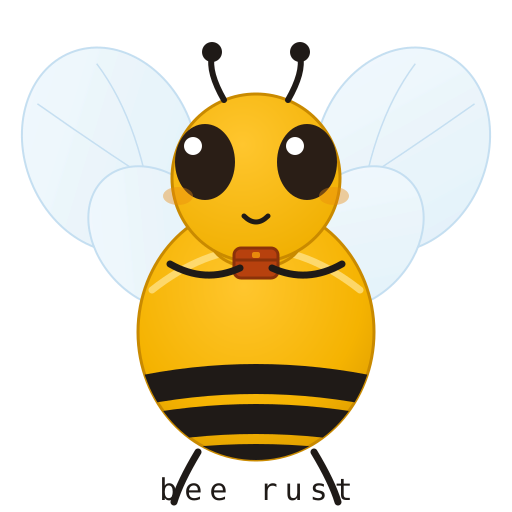
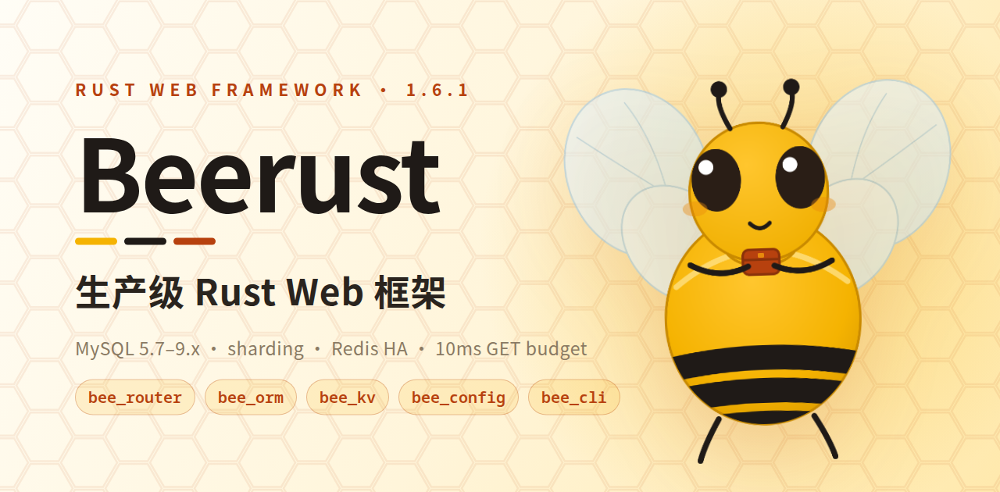

30s
开发体验
从创建项目到首个请求，30 秒以内。
RUST WEB FRAMEWORK · v1.6.1
生产级 Rust Web 框架
Beego 的设计哲学，用 Rust 的 trait、macro 与类型系统重新表达。

01 · 为什么是 Bee Rust
Bee Rust 不是把 Go 代码逐行翻译成 Rust，而是把 Beego 的 MVC、命名空间、过滤器链重新拆解，用 trait 与 macro 做出 Rust 原生的表达。默认 full 特性开箱即用，最小核心只依赖 axum + tokio。
从创建项目到首个请求，30 秒以内。
对比裸 axum 开销 <5%；P99 路由延迟设计目标 <100µs。
全量 release 编译 <60s，增量编译 <5s。
仅 router 的最小应用 <5MB（strip + LTO）。
业务代码 0 unsafe；所有 FFI 封装在独立的 *-sys crate。
Rust 1.85+（edition 2024 要求），跟踪 stable。
02 · 功能全景
Web、ORM、安全、配置、日志、缓存、Session、模板，以及五类存储引擎。每个 crate 都可以单独使用。
MVC 控制器、Context、命名空间路由、RESTful 方法注册与请求过滤器链。ctx.json() / text() / html() / redirect() / abort()。可选 6ms GET/HEAD 延迟预算与过期缓存兜底；其余方法保持 30s。
#[derive(Model)] + QuerySet、CRUD、三后端连接池（事务、超时与统一的 pool_status() / PoolStatus）、MySQL 5.7 / 8.0 / 8.4 / 9.x、MariaDB 10.11+、必须带分片键的库/表两级分片（ShardedPools / HashRouter，#[bee(shard_key)] + for_model 直接按实例路由，sync_all_parallel 并发迁移；不支持跨分片查询与事务）、非破坏性迁移、belongs_to / has_many / m2m、JSON 列、chrono / rust_decimal 映射与 TimedDb 慢查询包装。
security-rust 4 的 32 个内置检测器：XSS、SQL 注入、命令注入、SSRF、路径穿越、Log4Shell、reDoS 等。一行代码开启。
INI / YAML / ENV 加载与热更新、基于 tracing 的多级日志、tera 模板渲染。
每类一套 trait：Redis（deadpool-redis 真连接池 + RedisLock 分布式锁，acquire 有界等待、try_lock_with_watchdog 自动续期；RedisPoolStatus 健康检查、可配置响应超时；redis-tls 支持直连 rediss:// 与 URL 内 ACL 凭据；redis-sentinel / redis-cluster 提供 Sentinel 与 Cluster KV/缓存后端，Cluster 的 mget / mset 走单键命令）、Memcached、Elasticsearch、OpenSearch、ClickHouse、Neo4j、NebulaGraph、ArangoDB、InfluxDB、IoTDB、QuestDB。
创建脚手架、生成控制器与模型、热重载运行、打包发布，以及执行迁移。
功能迭代
03 · 架构
一个轻量元 crate 重新导出可独立使用的能力。feature gate 保持内核精简，存储引擎按需开启。
bee_ormKV / 缓存 Redis · Memcached bee_kv bee_cache搜索 Elasticsearch · OpenSearch · ClickHouse bee_search图 Neo4j · NebulaGraph · ArangoDB bee_graph时序 InfluxDB · IoTDB · QuestDB bee_tsdbsearch / graph / tsdb 按需开启，不在默认 full 内；每个存储后端都由独立 feature 门控。
请求过滤器链
任何环节都可以中断，类似 Beego 的 Abort。
技术栈
编译期宏展开、trait 静态分发、后端按 feature 编译。
04 · 项目宠物
琥珀金绒毛、三道炭黑条纹、四片透光翅膀，外加一只从不装花粉、只装依赖的锈橙工具盒。
它出现在 Logo、404 页、CLI 横幅与发布公告。
表情集
每个 SVG 自带表情、情绪特效与整体动效，并遵循 prefers-reduced-motion。

项目宠物、图片、图标与表情不是开源资产，商业使用需取得授权；详见 ASSETS-LICENSE.md。
05 · 安装
需要 Rust 1.85+（edition 2024）与 Cargo；除 axum / tokio 自身依赖外，没有额外系统依赖。
新建一个二进制 crate，然后加入元 crate。
cargo new hello-bee && cd hello-bee
cargo add bee_rusttokio 与 axum 作为直接依赖；CLI 脚手架会自动写好这些。
[dependencies]
bee_rust = "1.6.1"
tokio = { version = "1", features = ["full"] }
axum = "0.8"注册一个命名空间路由，交给 axum 服务；与仓库中受端到端测试覆盖的 examples/hello 同形。
async fn health() -> &'static str {
"OK"
}
#[tokio::main]
async fn main() {
let _log_handle = bee_rust::init().unwrap();
let router = bee_rust::bee_router::Router::new()
.ns("/api/v1", |ns| ns.get("/health", health));
let listener = tokio::net::TcpListener::bind("0.0.0.0:8080").await.unwrap();
axum::serve(listener, router.build()).await.unwrap();
}启动服务，请求健康检查端点。
cargo run
curl http://localhost:8080/api/v1/health
OK克隆工作区，构建全部 crate，跑完整测试。
git clone https://github.com/erikwang2013/bee-rust.git
cd bee-rust
cargo build --workspace
cargo test --workspacebee_cli 安装 bee-rust 二进制：脚手架、代码生成、热重载运行、打包。
cargo install bee_cli
bee-rust new my-app
cd my-app && cargo run06 · 使用说明
API 保持显式：注册路由、实现控制器、派生模型，然后查询。没有隐藏的魔法。
路径语法同 axum 0.8：动态段写 {name}；ns() 前缀与组内路径直接拼接。
let router = Router::new()
.ns("/api/v1", |ns| {
ns.get("/users", list_users)
.post("/users", create_user);
});实现 Controller trait；Context 提供 json / text / html / redirect / abort、session 与 params。
需要 async-trait = "0.1" 与 serde_json = "1"。
use async_trait::async_trait;
use bee_rust::bee_router::context::RouterError;
use bee_rust::prelude::*;
struct UserController;
#[async_trait]
impl Controller for UserController {
async fn handle(&self, ctx: &mut Context)
-> Result<(), RouterError> {
ctx.json(&serde_json::json!({"users": []}))
}
}派生 Model，声明 table / column / pk / auto，链式过滤后执行；迁移只建表补列，不破坏既有数据。
#[derive(Model)]
#[bee(table = "users")]
struct User {
#[bee(pk, auto)]
id: i64,
name: String,
age: Option<i32>,
active: bool,
}
let adults = User::query()
.filter_gt("age", 18)?
.order_by("id")
.limit(20)
.all(&pool).await?;| 特性 | 启用内容 | 备注 |
|---|---|---|
full | router · orm · kv · config · logs · cache · session · security · template | 默认开启 |
router | bee_router · bee_session · bee_template · bee_config · bee_logs | Web 核心 |
orm | bee_orm · bee_config · bee_cache | 模型 + QuerySet |
security | security-rust 4，32 个检测器 | 过滤器链 |
search · graph · tsdb | 搜索、图、时序引擎 | 按需开启，不在 full 内 |
orm-sqlite · orm-postgres · orm-postgres-tls · orm-mysql | 通过元 crate 转发 bee_orm 后端 | 同样按需开启 |
orm-chrono · orm-rust_decimal | 日期 / DateTime / Decimal 字段映射 | 按需开启 |
redis · redis-tls · redis-sentinel · redis-cluster · memcached · memcache · elasticsearch · opensearch · clickhouse · neo4j · nebulagraph · arangodb · influxdb · iotdb · questdb | 每个存储后端一个特性，可直接开在子 crate 或经 bee_rust 转发 | 不打包进 full |
bee_rust = { version = "1.6.1", default-features = false,
features = ["router", "logs", "config"] }07 · 常见问题
关于框架定位、与 Beego 的关系、支持的数据库以及如何跑起来。
Bee Rust 是一个生产级 Rust Web 框架。它把 Beego 的 MVC、命名空间与过滤器链带进 Rust，用 trait、macro 与类型系统重新表达，并提供 ORM、CLI 与统一的存储引擎抽象。
不是逐行翻译。它保留 Beego 的顺手之处——MVC、命名空间路由、过滤器链——但用 Rust 原生方式实现。默认 full 特性开箱即用，最小核心只依赖 axum 与 tokio。
SQLite、PostgreSQL、MySQL 5.7 / 8.0 / 8.4 / 9.x、MariaDB 10.11+、TiDB（bee_orm，支持必须带分片键的分库分表）；Redis（真实连接池、Sentinel / Cluster 与 RedisLock）、Memcached；Elasticsearch、OpenSearch、ClickHouse；Neo4j、NebulaGraph、ArangoDB；InfluxDB、IoTDB、QuestDB。每个后端都由独立 feature 门控，详见架构。
需要 Rust 1.85+（edition 2024），然后执行 cargo add bee_rust，或用 bee-rust new my-app 创建项目。快速开始会从空 crate 走到健康检查端点。
可以。工作区有 475 个测试、三后端连接池（事务与超时控制）、非破坏性迁移，以及 32 个检测器的安全过滤器。业务代码 0 unsafe；FFI 封装在独立的 *-sys crate。
仓库保留 13 语言 README、完整 API 参考、更新日志与贡献指南；docs.rs 从源码渲染每个 crate 与 feature。
08 · 下载
已发布到 crates.io，GitHub 有版本标签，docs.rs 有完整 API 文档。选一条顺手的路。
元 crate，一条 cargo add 即可加入。
前往 crates.io GitHub Release源码归档与版本说明。
下载源码 docs.rs全部 crate、全部 feature，由源码生成。
打开 docs.rs GitHub源码、示例、issue 与完整提交历史。
打开 GitHubcargo add bee_rust
代码采用 Apache-2.0；视觉资产版权保留，详见 ASSETS-LICENSE.md。
09 · 支持
如果 Bee Rust 帮到了你，可以用微信支付或支付宝支持项目。